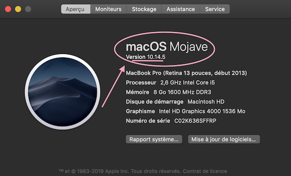

Ordinateur Apple
Apple met à jour régulièrement la version du logiciel de l’iPhone (iOS), de l’ordinateur (macOS), et l’application Xcode. Les développeurs de Loop travaillent diligemment de mettre à jour Loop au fur et à mesure que Apple mettre à jour leurs produits.
Ne pas installer les bêtas de Xcode, iOS, ou macOS sur les périphériques avec lesquels vous utilisez Loop.
Les versions les plus récentes des logiciels sont :
| Logiciel | Version |
|---|---|
| iOS | 12.4 |
| macOS | 10.14.6 |
| Xcode | 10.3 |
| Loop | 1.9.6 |
| watchOS | 5.3 |
La façon dont Apple met à jour ses produits est que l’une des mises à jours d’un seul périphérique entraîne les mises à jour des autres. Par exemple, si vous mettez à jour iOS sur l’iPhone, vous pourriez être obligé(e) de mettre à jour Xcode pour installer la nouvelle version de Loop. Et le nouveau Xcode oblige les développeurs de Loop à mettre à jour le code de Loop. Enfin, le nouveau Xcode requiert souvent une mise à jour macOS aussi.
Quand pourrai-je utiliser Xcode 10.1 et macOS 10.13.6 ?
Ces versions sont en train d’être retirées car Apple ne les utilise plus. Pour l’instant, si vous pouvez pas mettre à jour votre ordinateur Apple afin d’avoir Mojave, vous pouvez toujours monter Loop à condition que :
- Vous utilisez la branche Master de Loop (donc ni Omnipod ni dev)
- Vous n’avez pas iOS 12.2
Si vous souhaitez utiliser les branches Omnipod-testing ou Loop-dev, vous êtes obligé(e) d’avoir Mojave comme macOS et Xcode 10.2. Si vous avez mis à jour votre iPhone et avez iOS 12.2, vous serez contraint(e) de télécharger Mojave et Xcode 10.2 minimum.
Omnipod et dev
Afin de monter Omnipod -Loop, vous devez avoir macOS 10.14.3 (Mojave) et Xcode 10.2 minimum. La version de Loop qui maintient Omnipod et dev requiert les versions les plus récentes de macOS et Xcode.
Accès à l’ordinateur
L’accès à l’ordinateur est obligatoire uniquement quand vous installez pour la première fois, quand vous mettez à jour votre Loop, ou quand vous changez le code de Loop. Vous n’avez pas besoin d’accès à l’ordinateur pour faire du dépannage ou changer les réglages de Loop, comme taux de basalte ou ratios glucides.
Trouver sa version de macOS
Cliquez sur l’icône Apple en haut et à gauche de votre écran. Sélectionnez "À propos de ce Mac" depuis le menu et le numéro de version sera affiché collé ci-dessous :

Si votre ordinateur a une version ancienne de macOS, vous pouvez voir si une mise à jour est possible en consultant cette page. Le degré duquel vous pouvez mettre à jour un ordinateur Apple assez ancien dépend de son âge ainsi que son modèle. Veuillez consulter ci-dessous pour trouver l’âge minimum des ordinateurs Apple pouvant avoir Mojave :
| Ordinateur | âge minimum |
|---|---|
| MacBook | début 2015 |
| MacBook Air | mi-2012 |
| MacBook Pro | mi-2012 |
| Mac mini | fin 2012 |
| iMac | fin 2012 |
| iMac pro | 2017 |
| Mac Pro | fin 2013 ; mi-2010 et mi-2012 avec les cartes graphiques recommandées (Metal-capable) |